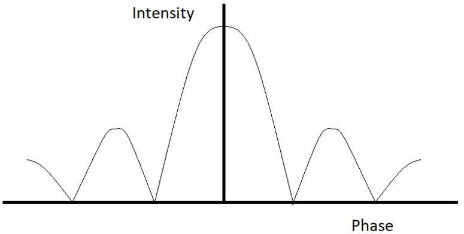

Diffraction Quiz
Quiz Topic: Diffraction
Instructions:-
1. Questions are multiple choice and only 1 option is correct.
2. 1 mark will be awarded for correct answer
3. 0 mark will be awarded for wrong answer
Q1. What changes are observed in a diffraction pattern if the whole apparatus is immersed in water?
A. The Wavelength of light increases
B. Width of central maximum increases
C. Width of central maximum decreases
D. Frequency of light decreases
Q2. How shall a diffraction pattern change when white light is used instead of a monochromatic light?
A. The pattern will no longer be visible
B. The colored pattern will be observed with a white bright fringe at the center
C. The shape of the pattern will change from hyperbolic to circular
D. The bright and dark fringes will change position
Q3. The following pattern is observed for which experiment?

A. Fabry-Perot Interferometer
B. Double Slit Fraunhofer Diffraction
C. Fresnel Diffraction Single Slit Fraunhofer Diffraction
D. Single Slit Fraunhofer Diffraction
Q4. By observing the diffraction pattern, the two images are said to be just resolved when ________
A. The central maxima of one image coincide with central maxima of the other
B. The central maxima of one do not coincide with central maxima of the other
C. The central maxima of one image coincides with the first minimum of the other
D. The central maxima of one image do not coincide with the first minimum of other
Q5. If the Fresnel’s distance is a, then what should be the distance of the screen from the slit, d, such that ray optics is no longer valid?
A. d > a
B. d < a
C. d = a
D. No relation between d and a
Q6. X-ray crystallography uses which characteristic of light?